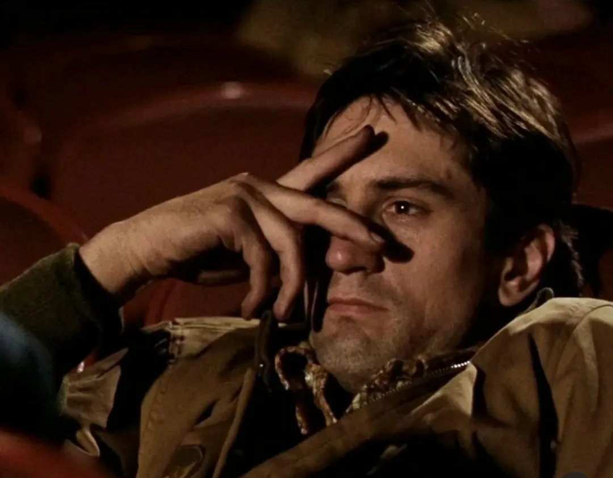

50 anos de ‘Taxi Driver’
Onde estaria Travis Bickle na era das redes sociais?

Lançado em 1976, dirigido por Martin Scorsese e estrelado por Robert De Niro, Taxi Driver foi um dos títulos da Nova Hollywood, movimento cinematográfico americano do final dos anos 1960 e da década de 1970, no qual cineastas jovens passaram a ter maior liberdade criativa frente aos grandes estúdios, resultando em filmes com temas difíceis, violência e forte realismo.
Junto ao filme de Scorsese, destacam-se como principais títulos do movimento os filmes: Bonnie e Clyde (1967), Easy Rider (1969), O Poderoso Chefão (1972/74) e Chinatown (1974).
Na trama, acompanhamos Travis Bickle (Robert De Niro), um veterano da Guerra do Vietnã marcado pela solidão e pela insônia. Para lidar com suas noites em claro, Travis passa a trabalhar como motorista de táxi, transportando passageiros dos mais diversos tipos por uma soturna e decadente Nova York do período pós-Vietnã. Acompanhamos os pensamentos do personagem por meio de monólogos narrados por ele próprio, que revelam um profundo ressentimento em relação ao que vê, um mundo que, em sua visão, deve ser expurgado. Em suas próprias palavras: “À noite, todos os animais saem da toca… Um dia, uma tempestade limpará toda essa sujeira.”
O filme é um profundo estudo de personagem, com uma atmosfera sombria e claustrofóbica. A cinematografia de Michael Chapman e a trilha sonora de Bernard Herrmann transmitem a sensação de isolamento em um grande centro urbano.
Vemos uma Nova York em decomposição, retratada quase como um personagem coadjuvante. Cena a cena, a cidade surge como símbolo da decadência urbana, com luzes de néon opacas, ruas imundas e prédios deteriorados. Esse visual, alinhado ao gênero neo-noir, evidencia a alienação do protagonista.
Travis na era hiperconectada
Hoje, em um mundo hiperconectado, poderia existir um Travis? E como ele interagiria com a internet?
Especialistas em comportamento social usam o termo “solidão estendida” para descrever um paradoxo da era digital: apesar da conectividade constante, muitos indivíduos permanecem profundamente isolados, com vínculos frágeis e relações pouco significativas. A presença contínua nas redes cria a sensação de companhia, mas não substitui o contato humano real, ampliando sentimentos de distanciamento e incomunicabilidade.
Paralelamente, as plataformas digitais criam “câmaras de eco” que reforçam crenças extremas, já que algoritmos tendem a privilegiar conteúdos emocionalmente intensos e polarizadores. Nesse contexto, alguém isolado como Travis poderia encontrar em fóruns online validação para suas angústias e ressentimentos, ambientes nos quais a violência pode ser romantizada e reforçada, alimentando processos de radicalização.
Ou seja, na era digital, Travis não seria necessariamente “socialmente ajustado”; ao contrário, é provável que encontrasse validação online para seus pensamentos perturbados. Em plataformas de interesses nichados, ele ecoaria suas próprias reclamações sem qualquer confrontação externa.
Estamos mais solitários do que nunca, presos ao eco de nossos próprios pensamentos nas redes.
Isso reforça a ideia de que estamos mais solitários do que nunca, presos ao eco de nossos próprios pensamentos nas redes. A ilusão de amizade virtual não substitui o contato humano real; na verdade, pode aprofundar a sensação de falta de pertencimento.
Enfim, é assustador pensar que, mesmo após 50 anos, o filme continua atual e que seu protagonista seria ainda mais suscetível à deterioração no contexto contemporâneo. Dito isso, assistam ao filme, é excelente.